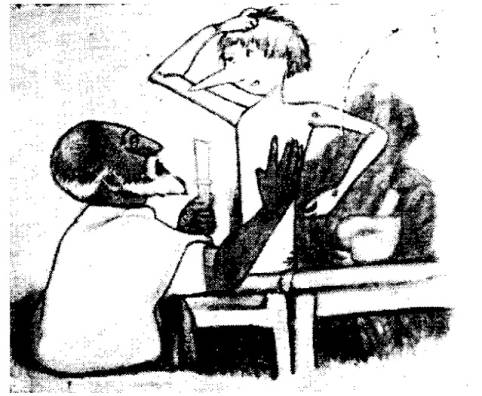

ብኢትዮጲያ ሰባት ዘመስግነኒ ኢዩ በመባል ካርሎ ኮሎዲ ዝተባሃለ ፀሐፊ ዝጸሐፎ ፒኖኪዮ ተባሂሉ ዘተሰየመ ኣብ ዓለም ዝተፈለጠ ጽቡቕ ሽም ዘለዎ ዝተነኣደ ናይ ጥሊያን መጽሐፍ ብትግርኛ ንምትጓም በሙሉእ እምነት ተላዒለ።
እዚ መጽሐፍ ንመናእሰይን ንሕፃናትን ጥራይ ኣይተጸሐፈን። ዓበይቲ እውን ብሐጎስን ብምጽዋትን እናኣንበቡ ቁሩብ ጊዜኦም ንምሕላፍ ብማለት ደኣ እንበር።
ፒኖኪዮ ብሐቂ ብኸሉ ቋንቋ ዝተተርጎመ ጽቡቕ ሽም ዘለዎን ብዓለም ዝተነኣደን ስለዝኾነ፤ ካብ ብዙሕ ዘመን ጀሚሩ ንናይ ዓለም ሕፃናት ኩሎም ዘሕጉስን ዘጻወትን ኮይኑ ይነብር።
ናይ ኢትዮጵያ መናእሰይ ከምዚ ዘሕጉስ ምንባብ እንዳኣንበቡ ክጻወቱ፤ እንዳተፃወቱ ድማ ክመሃሩ ብምባል ነዚ መፅሐፍ ምድላው ከምዘድሊ ተሰሚዑኒ።
ፒኖኪዮ ካብ ኩሉ ንቆልዑውን ዘምህርን ዘመርሕን መጽሐፍ ኢዮ። ብዛዕባ ሐይማኖት ፈጺሞ እኳ ኣብ ውሽጡ እንተዘይሃለዎ፤ ኣእምሮ ዝኸፍት መጽሐፍ ኢዩ። ብዝበለጸ ድማ ካብ ሐቂ ዝወጸ ፍሉይ ታሪኽ እና ኣውረዬ ዘይንቀሳቀሱ ነገራት ዘይባህሪኦም ባህሪ እንዳሃበ ንምስሐቕን ናምድናቕን ዝጥዕም ጽቡቕ መጽሐር ኮይኑ ትረኽብዎ። በዙሕ ጊዜ የስሕቕ፤ ብዙሕ ጊዜ የሕዝን፤ ብዙሕ ጊዜ ናይ ቆልዑት ድኽመት ክንዲምንታይ ምዃኑ የርእይ፤ በዚ ህያቡ ነገራት እንዳገላበጠን እናዳዘርዘረን እናዳኣርኣየን ቆልዑት ክገብርዎ ዝግብኦምን ዘይግብኦምን ኣብ ዓቢ ጥፍኣት ዘብጽሕ ገዲፍካ ናብ ጽቡቕ መንገዲ ዘመርሕ፤ ምስ ክፉእ ዓርኪ ምውዓል ዘምጽኦ ሽግርን ኩነታትን ኩሉ እንዳፈለየ ብሰፊሑ የርእዮም።
ፒኖኪዮ ብትግርኛ ወዲ ዕንጨይቲ ኢለ ዝተርጎምክዎ ከም ሰብ ዝንቀሳቐስ፤ ዝዛረብ፤ ዝሰሕቕ፤ ዝበክይ፤ ብዝበለጸ ድማ ናይ ቆልዑት ዓይነት ጸባይ ዘለዎ ሐደ ናይ እንጨይቲ ምስሊ ኢዩ። ድሕሪ ብዙሕ ድኻምን ታሪኽን ኣብ መወዳእታ ወዲ ዕንጨይቲ ሐደ ወዲ ሰብ ዓጽሚን ስጋን ለቢሱ ኣብ
ልዕሊ እዚ ኹሉ ደሐን ዝኾነ ሰውነትን ናይ ስራሕ ምፍታው ባህሪ ንዝሐደሮ ናይ ሐቂ ፍጹም ዝኾነ ሰብ የኸውን።
እዚ ወድኤ ዘቕርብኩልኩም ጽቡቕ ሽም ዘለዎ መጽሐፍ ሐደኳ ሃይማኖት ዘይቃወም ከም ፀወታ እንዳገበረ ዘምህር ሙሉእ ናይ ምኽሪ ቃልን ዘሕጉስን ኣእምሮ ዘንቅሕን ናይ ምንባብ መጽሐፍ ስለዝኾነ እቲ ዘንብብ ከይተፈለጦ ከየቋረጸ እንዳተመሃረን እንዳተመኸረን ምንባቡ የከታተል። እዚ ድማ ናይ እቲ መጽሐፍ ፍረ ነገሩ ንዝተረድኦ ሰብ መጽሐፍ ምዃኑ ተሪፉ ትጉህን ጽቡቕ ምኽርን ምዃኑ ይምሰል።
ምሳይ ኮይኑ ብዙሕ ሥራሕ ንዝወዳኣለይ ብዙሕ የመስግን። ጽሕፈተይ ኣንቢቦም ቅድሚ እዚ መጽሐፍ ምሕታሙ ቃላቱ ዘመሐየሹለይን ምኽሪ ዝሃቡንን ንኹሎም የመስግን።
-ቀደም ሐደ...
-ቀደም ሐደ...ኢለ ክጅምር ቁሩብ ኣንበብቲ
-ንጉስ ነይሩ! ኢሎም ይብሉኒ ይኾኑ።
ኣይኮነን ተጋጊኹም። ቀደም ሐደ ንእሽቶይ ናይ ዕንጨይቲ ቁራጽ ነይሩ። እዚ ቁራጽ ዕንጨይቲ ፍሉይ መልክዔኛ ኣይነበረን፤ እንታይ ደኣስ ዝነድድ ዕንጨይቲ ኢዩ ነይሩ።
ከመይ ከምዝኾነ ከይተፈለጠ ሐደ መዓልቲ ጥራይ እዚ ዕንጨይቲ ኣብ እንዳ ሐደ ሽማግሌ ሐናጺ ገዛ ተረኺቡ። እዚ ሐናጺ ድማ ኣያ ገብሩ ይባሃል ነይሩ። ኣፍንጭኡ ኩሉ ጊዜ ቀይሕ ስለዝነበረን፤ ዝበሰለ ቲማቲም ስለዝመስል ኩሉ ሰብ በዚ ስያሜ ኣያ ቲማቲሞ ዝብል ሽም ኣውጽኢሉ።
ኣያ ቲማቲሞ ነቲ ቁራጽ ዕንጨይቲ ምስረኣዮ ብጣዕሚ ተሐጉሱ ኢዱ እንዳደረዘ፤ ብኸብዱ ከምዚ እንዳበለ ኣጉረምሪሙ፤
እዚ ዕንጨይቲ ልክዕ ኣብቲ ዝደልዮ ሰዓት በጺሑለይ። ንሐደ ናይ ጣውላ እግሪ ካብ ምሕሳብ የዕሪፉኒ!።
ከምዚ ኢሉ ቅራፉ ንምልዓልን ንምጽራብን ብድግ ኢሉ ቀልጢፉ ፋስ ኣልዓለ። ኢዱ ከልዕል ክብል ከሎ ሐንቲ ረቃቕ ድምጺ ሰሚዑ ገሪምዎ ጠጠው በለ። እታ ረቃቕ ድምጺ እናለመነት፤ ብጣዕሚ ኣይትጉድኣኒ! በለት። እዚ ድምጺ ምስ ሰምዔ ለዋህ ኣያ ቲማቲሞ ከመይ ተገሪሙ የመስለኩም! እዚ ድምጺ ካበይ ከምዝመጸ ንምፍላጥ ኣያ ቲማቲሞ ነቲ ገዛ ኣፍጢጡ ረኣዮ፤ ግና ዋላሐደ ኣይነበረን፤ ኣብ ትሕቲ ጣውላውን እንተረኣየ ምንም ኣይነበረን፤ ተዓጽዩ ዝነብር ሳንዱቕ ከፊቱ እንተረኣየ ምንም ኣይነበረ፤ ዝተጸራረቡ ዕንጨይቲ ዝእከበሉ ቅርጫት እንተራኣዬ ዋላሐደ ኣይረኸበን። ናይ ሹቕ ማዕጾ ከፊቱ ንደገ ገጹ እንተራኣዬ ሐደ ሰብኳ ኣይነበረን።
እንተዘየሎ ኢሉ ጨደረ።
እንዳሰሐቐን ሽበቱ እንዳሐኸን ተረዲኡኒ ተረዲኡኒ ንዓይ መሲሉኒ እምበር ለካ ድምጺ ኣይሰማዕኩን! ናብ ስርሔይ ክምለስ በለ።
እንደገና ፋሱ ኣልዒሉ ነቲ ቁራጽ ዕንጨይቲ ብሐይሊ እንተሃረሞ ኣዩ! ኣዩ! ኣዩ! ኣሕሚምካኒ! እንዳበለት እታ ረቃቕ ድምጺ እንዳበኸየት ጨደረት ሽዑኡ ኣያ ቲማቲሞ ከም ዝወግሖ ዝብኢ ብስንባደ ኣፉ ከፊቱ ከም ጨው ሐቒቑ ፈዚዙ ይረኣይ ነበረ።
እዚ ድምጺ ካበይ ኢዩ ዝመጽእ ዘሎ? ድማ ኣብዚ ስፍራ ዋላሐደ ሰብ የለን፤ ምናልባት እዚ ዕንጨይቲ ከም ንእሽቶይ ቆልዓ ምብካይ ተማሂሩ ይኸውን። ከምዚ ኣይመስለንን እዚ ዕንጨይቲ እንሄለ ከም ካልእ ዕንጨይቲ ሐደ ድስቲ ሐምሊ ከብስል ይኽእል። ወይ ድማ ኣብ ውሽጡ ዶ ሰብ ተሐቢኡ ይኸውን? ዝተሐብኤ እንተሃለወስ ወይልኡ ንዑኡ ኣምበር ኣነስ ከርእዮ ኢየ በለ።
ከምዚ ኢሉ ነቲ መከረኛ ዕንጨይቲ ኣልዒሉ ብዘይ ገለ ሐዘን ምስቲ ናይ ገዝኡ መንደቕ ከጋጭዎ ጀመረ። ዝበክይ ድምጺ ምህላው ንምስማዕ እዝኑ ምጽላው ጀመረ፤ 2፣3፤5 ደቒቕ ንምስማዕ እንተተጸበዬ ውን ምንም ነገር ስይሰምዔን። ንምስሐቕውን እናፈተነ ሽበቱ እናነጸየ፤ ተረዲኡኒ! እዛ ድምጺ ዘይትርከብ ድምጺ ምዃና ተረድኤ።
ሰርሔይ ክጅምር፤ በለ።
ዓቢ ኩርዓት ስለዘሐደሮ ብምብርትታዕ ቁሩብ ቁሩብ ምንጉርጓር ጀመረ። ነቲ ፋሱ ኣብ ጎኑ ጌሩ መልሐጊ ንምድላይ ተንሰኤ።
ሕጂውን እታ ድምጺ እንዳበኸየት ግደፍ ግደፍ ትሽትሽ ኣይትበለኒ በለት።
ካብኡ ኣያ ቲማቲሞ ሆዬ በመብረቕ ከም ዝተሃረመ ኣብ መሬት ወደቐ። ነብሱ ምስፈለጠ ኣብ መሬት ምዝርግሑ ተፈለጦ። ብስንባደ መልክዑ ስለ ዝተለዋወጠ ኩሉ ጊዜ ቀይሕ ዝነበረ ኣፍንጭኡ ዝገደደ ዝተጠበሰ ሳንቡእ መሲሉ።
ኣያ ቲማቲሞ ነታ ቁራጽ ዕንጨይቲ ንፈታዊኡ ንኣባ ዮሴፍ ከምዘበርከታን ኣባ ዮሴፍ ድማ ዝስዕስዕን፤ ዝዘልልን፤ ዝዛረብን ምስሊ ክሰርሕ ምስወሰዶ፤
ሽዑኡ ማዕጾ ተዃኪሑ።
እቲ ሐናጺ ካብ ኮፍ ዝበለሉ ምልዓል ስኢኒ እቶ፤እቶ በለ። ናብራ ዝጠዓሞ ኣባ ዮሴፍ ዝተባሃለ ሽማግሌ ነቲ ማዕጾ ከፊቱ ኣተወ። ምንምእዃ ኣባ ዮሴፍ እንተተባሃለ ሽበቱ ቢጫ ስለዝነበረ ዝረኸብዎ ተጻወትቲ ቆልዑት ኩሎም ንምልጋጽ ኣባሽሮ፤ ኣባሽሮ እንዳበሉ ይጽውዕዎ ነይሮም። ኣባ ዮሴፍ ድማ ንእሽቶይ ነገር ዝኣኽሎ ሐራቕ ስለዝነበረ ኣባሽሮ ኢሉ ዝጽውዖ ሰብ ወይልኡ፤ ነብሪ ኾይኑ ንዓራቓይ የሸግር ነይሩ።
ኣባ ዮሴፍ ድማ ገና ከይኣተወ ከመይ ኣላኻ ኣባ ቲማቲሞ፤ እረ ኣብ ዓለም እንታይ ትፈጥር ኣለኻ? በለ።
እቲ ሐናጺ ፤ ተንበርኪኹ፤ ዝጠየቕካኒ እንተሃልዩኒ ክህበካ ተዳልዬ ኣለኹ በለ።
ኣባ ዮሴፍ ገና ዘረብኡ ከይወደኤ እታ እትወጸሉ ስፍራ ዘይፍለጥ ረቃቕ ድምጺ ንፉዕ ንፋዕ ኣባሽሮ እናበለት ጨደረት።
ኣባ ዮሴፍ ድማ ኣባሽሮ ምባሉ ምስ ሰምዔ በርበረ ስጋብ ዝመስል ሐሪቑ ናብቲ ሐናጺ ገጹ ዓይኑ ኣፍጢጡ ናብ ገዛኻ መጽኤስ ከምዚ ክትብለኒ? ኢሉ ጨደረ።
ነገሩ እንዳገደደ ስለዝኸደ ተሐናኒቖም ተባኣሱ ነንሕድሕዶም ተጸራረፉ ድሕሪ እቲ ጽልኢ ኣያ ቲማቲሞ ኣባ ዮሴፍ ከም ቆቢዕ ዝደፍኦ ናይ ሐሶት ሽበት ኣብ ኢዱ ምንባሩ ረኣዬ፤ ኣባ ዮሴፍ ድማ ኣያ ቲማቲሞ ናይ ዕንጨይቲ ሽበት ብስኑ ነኸሱ፤
ኩሉ ጊዜ ዘሰንብዶ ቁራጽ ዕንጨይቲ ካብ ጣውላ ኣልዒሉ ነቲ ሽማግሌ ክህቦ ቅርብ ክብል ከሎ እቲ ዕንጨይቲ ዘሊሉ ከም ሐሰማ ኣብ ሰለፍ ኣባ ዮሴፍ ወደቐ።
ኣባ ዮሴፍ ሰለስተ ጊዜ ኣባሽሮ ምስተባሃለ ዓይኑ ብሕርቃን ጽልመቶ ኣብ ርእሱ ተንጠልጢሉ ተሐናኒቖም ተባኣሱ። ድሕሪ እቲ ጽልኢ ኣያ ቲማቲሞ ኣብ ኣፍንጭኡ ተባሕጪሩ ኣብ ክልተ ቦታ ደም ብደም ኮይኑ ረኸቦ። ኣባ ዮሴፍ ድማ ካብ ጅቡኡ ክልተ ኣዝራር ጎዲሉ ረኸቦ። ድሕሪ እዚ ኹሉ ኢድ ንኢድ ተጨባቢጦም ናይ ልቢ ፈተውቲ ኮይኖም ክነብሩ ተመሐሐሉ
ኣባ ዮሴፍ እታ ቁራጽ ዕንጨይቲ ኣልዒሉ ንኣያ ቲማቲሞ እንዳ ኣመስገነ፤ እንዳሐንከሰ ንገዝኡ ከደ።
ኣባ ዮሴፍ ንገዝኡ ምስተመለሰ ነቲ ምስሊ ሰሪሑ ወዲ ዕንጨይቲ ኢሉ ስም ኣውጸኣሉ ናይ እቲ ዕንጨይቲ ናይ መጀመሪያ ዘይጠቅም ምዃኑ
ናይ ኣባ ዮሴፍ ንእሽቶይ ናይ ድኻ ገዛ በጭራሮ ትዕጾ ገዛ ኢያ ዝነበረት። ኣቑሑት ናይ ገዛ ውን ከምዓቕሙ ሐንቲ ዘይትረብሕ ዓራት፤ ሐንቲ ሐንካስ ዱካ፤ ሐንቲ ድማ ዘንባል ጣውላ ነይሮሞ። በቲ ውሽጢ መንደቕ ድማ ሐዊ ይረኣይ ነበረ። ግና እቲ ሐዊ ስዕሊ እዩ ነይሩ። ኣብቲ ርእሲ ሐዊ ድማ እንዳፈልሔ ዝተክኽ ዝመስል ዕትሮ ተሳኢሉ ስለዝነበረ እቲ ዝረኣይ ትኪ ናይ ሐቂ ይመስል ነይሩ።
|  ኣባ ዮሴፍ ወደ ዕንጨይቲ ምስ ሰርሔ |
ኣባ ዮሴፍ ኣብ ገዝኡ ምስኣተወ ናይ ሐናጺ መሳርሒኡ ኣኪቡ ነቲ ምስሊ ምቕራጽን ምስኣልን ጀመረ። እንታይ ዝብል ሽም እንተ ኣውጻእኩሉ ይሐይሽ እንዳበለ ድሕሪ ምሕላሙ ወዲ ዕንጨይቲ ክብሎ ኢዬ እዚ ሽም እዚ ኸኣ ዕድለኛ ክኸውን ይገብሮ። ናይ ወዲ ዕንጨይቲ ዘርኢ ዝተባሃሉ ኩሎም ይፈልጦም ኢዬ። መብዛሕትኦም ዕድሜኦም ከምገለ ጌሮም የሕሊፎም፤ ካብኣቶም እቲ ሃብታም ዝተብሃለ ምጽዋት ይለምን ነይሩ ኢሉ ቅድሚ ሽም ምውጽኡ ኣባ ዮሴፍ ሥርሑ ጀሚሩ ጨጉሪ፤ ግንባር፤ ዓይኒ፤ ቀልጢፉ ሰርሐሉ።
ዓይኒ ምስ ሰርሐሉ እቲ ዓይኒ ኣተኩሩ ምስረኣዮ እቲ ሽማግሌ ከመይ ገሪምዎ ይመስለኩም?
ኣባ ዮሴፍ ንዑኡ ዝምልከት ዓይኒ ምስ ረኣየ ብጣዕሚ ብምሽባር ሕርቕ ኢሉ፤ ኣንታ ክፉእ ዓይኒ ዕንጨይቲ ንምንታይ ከምኡ ጌርካ ትርእየኒ? ኢሉ ጨደረ ግናኸ ገለ መልሲ ኣይረኸበን።
ድሕሪ እዚ ከኣ ኣፍንጫ ሰርሔሉ ምስተሰርሔ ድማ ብቕጽበት ምዕባይ ጀሚሩ። ዓብዩ ዓብዩ፤ ዕብዬቱ
ዘይውዳ ኮነ። ለዋህ ዝኾነ ኣባ ዮሴፍ ኣፍንጭኡ ንምቕምቓም ተሀከዮ።
ብዝቐምቀሞ ቁጽሪ እቲ ኣፍንጭኡ ዝገደደ እንዳዓበዬ ከደ።
ነቲ ኣፍንጫ ገዲፉ ድማ ናብ ኣፉ ምስራሕ ኣተወ። ኣፉ ድማ ገና ተሰሪሑ ከይተወድኤ ብሰራሒኡ ምስሐቕን ምልጋጽን ጀሚሩ። ኣባ ዮሴፍ ከኣ ሕርቕ ኢሉ ኣይትስሐቕ በሎ፤ ግን ምስ እምኒ ከም ምዝራብ ኮይኑ ተረፈ። መሊሱ ኣይትስሐቕ ኢዬ እኮ ዝብለካ! ኢሉ እንዳፈከረ እቲ ሽማግሌ ምጭዳር ምስጀመረ ምስሐቕ ገዲፍ ዘሎን ዘየሎን መልሐሱ ምውጻእ ጀመረ።
ኣባ ዮሴፍ ድማ እንዳረኣየ ከምዝይረኣየ መሲሉ ሱቕ ኢሉ ስርሑ ቐጸለ። እዚ ምስሰረሔ መንከሱ፤ ክሳዱ፤ መንኩቡ፤ ከብዱ፤ ኢዱ፤ ሰርሐሉ። ኢዱ ሰሪሑ ምስወደኤ ኣባ ዮሴፍ ከም ቆቢዕ ዝደፍኦ ናይ ሐሶት ሽበት ካብ ርእሱ ክኸይድ ከሰሚዕዎ ቅንዕ ምስበለ እንታይ ዝረኣየ የመስለኩም? ቢጫ ሽበቱ ኣብቲ ምስሊ፤ ኣብ ኢድ ወዲ ዕንጨይቲ ራኣዮ።
ወዲ ዕንጨይቲ ሽበተይ ቀልጢፍካ ምለሰለይ! ኢሉ ጨደረ።
ወዲ ዕንጨይቲ ድማ ኣብ ክንዲ ምምላስ ኣብ ርእሱ ጌሩ ስጋብ ዓቕሉ ዝጸቦ ኾነ። እቲ ዝሰርሖ ምስሊ መላገጽን መስሐቕን ኮይኑ ምስራኣዮ ኣባ ዮሴፍ ብጣዕሚ ሐሪቑ።
ህኩይ ቆልዓ ገና ተሰሪሕካ ከይተወዳእካ ንኣቦኻ ትሕዝን? ክብሪ ኣይትህበንን? ወደይ ከምዚ ምግባር ጽቡቕ ኣይኮነን! ጽቡቕ ኣይኮነን! ኢሉ ንብዓቱ ደረዘ።
ዝኾነ ኾይኑ ዝተረፈ ስራህ ቅልጽምን ኣግሪን ጥራይ ኢዩ ነይሩ። ኣባ ዮሴፍ እግሩ ሰሪሑ ምስወደኤ ብእግሩ ኣፍንጭኡ ረገጾ። በዚ ኸኣ ዝገደደ ሐዚኑ ጽቡቕ ገበረኒ! ይግባኣኒ ኢዩ ኣቐዲመ ክሐስብ ይግባኣኒ ነይሩ። ሕጂ ግን ዝኾነ ኾይኑ ኢዩ እንታይ ይግበር! በለ።
ድሕሪዚ ኣባ ዮሴፍ ንወዲ ዕንጨይቲ ብኽንዱ ደጊፉ ምኽያድ ከምህሮ ኢሉ ኣብ መሬት ኣንበሮ። ወዲ ዕንጨይት እግሩ ስለዝደንዘዘ ገና ኸኣ ምኽያድ ስለዘይክእል ኣባ ዮሴፍ ኣእዳዉ ሒዙ ታተ ከብሎ ጀሚሩ።
ምድንዛዙ ምስገደፎ ወዲ ዕንጨይቲ ንበይኑ ኣብገዛ እንዳኸደ ምጉያይ ጀመረ። ኣብ መወዳእታ ግና ኣብ ገዛ ቀስ ኢሉ ሸሊኹ ወጸሞ መገዱ ሒዙ ተዓዘረ።
ህኩይ ወዲ ዕንጨይቲ ከም ማንቲለ እንዳዘለለ ስለዝጎየየ ኣብቲ መንገዲ ከምበዓል ፈረስ ኳዕኳዕ እንዳበለ ስለዝበረረ ኣባ ዮሴፍ ክረኽቦ ኣይከኣለን። ሐዞ! ሐዞ! እንዳበለ ብርሑቕ ይኽተሎ ነበረ። ኣብ መንገዲ ዝነበሩ ሰባት ብሙሉኦም እዚ ናይ ዕንጨይቲ ምስሊ ከም ሚዳቋ ክበርር ከሎ ምስራኣይዎ ብኹነታቱ ብምግራም ጠጠው ኢሎም ከብዶም ስጋብ ዝቖስል ይስሕቑ ነበሩ።
ኣብ መወዳታ ክፉእ ዝሆነ ዕድሉ ወዲ ዕንጨይቲ ሐደ ዘብዔኛ ኣጋጠሞ። እዚ ዘብዔኛ ሰባት ክልፍልፉ ሰሚዑ ጎይተኣ ዘምለጠት ዒሉ ዘላ መሲልዎ ኣብ ማዕከል መንገዲ እግሩ ዘርጊሑ ምሕላው ጀመረ።
ወዲ ዕንጨይቲ ግና እንዳጎየየ መጺኡ ነት ዘብዔኛ ምስራኣየ ከመይ ጌሩ ከምዝሐልፍ ብልሐት ምድላይ ጀመረ። ነቲ ዘብዔኛ ብመንጎ ኣእጋሩ ንምሽላኽ ሐሲቡ ሾሊኹ ክጎይይ ክብል፤ እቲ ዘብዔኛ በኣፍንጭኡ ሒዙ ጠጠው ኣበሎው። (ናይ እቲ ምስሊ ኣፍንጫ ካብ ልክዕ ዝሐለፈ ኮይኑ ምስርሑ ነቲ ዘብዔኛ ንምሐዝ ክጥዕሞ ኢሉ ዝተሰረሔ ይመስል ነይሩ)።እቲ ዘብዔኛ ቢኢዱ ኣንጠልጢሉ ንኣባ ዮሴፍ ኣረከቦ። እቲ ሽማግሌ ተቐቢሉ እዝኑ ንኽቕንጥው በጣዕሚ ተሃዊኹ ነበረ። እዝኑ ደልዩ ምስ ሰኣነ ከመይ ተደኒቑ ይመስለኩም? ንምታይ እንተበልኩም ብታህዋኽን ብሕርቃንን ለካ እዝኑ ምስራሕ ስለ ዝረስዖ ኢዩ። እዝኑ ምስ ሰኣነ ብሕሳዱ ሒዙ እንዳፈከረን እንዳኣዳፍኤን ናብ ገዝኡ ክወስዶ ከሎ ከምዚ በሎ፤
በል ንገዛና ንኺድ። ኣብ ገዛና ምስ በጻሕና ስራሕካ ከርእየካ እየ።
ወዲ ዕንጨይቲ ድማ ኣባ ዮሴፍ ስለዝፈከረሉ ኣብ መሬት ተዘርጊሑ ምኻድ ኣበዮ። ኣብዚ ጊዜ እዚ ወረኛታት ከቢቦሞ ጠጠው ምባል ጀመሩ። ካብኣቶም ሐደ ገለ ኢሉ ክዛረብ ከሎ ካልእ ድማ ተቐቢሉ ይምልሰሉ ነበረ። ሐደሐዲኦም ድማ፤
እዚ መከረኛ ምስሊ ሐቂ ኣለዎ፤ ኣብ ገዝኡ ምስበጽሔ እዚ ክፉእ ሰብኣይ ኣባ ዮሴፍ እንታይ ከምዝገብሮ መን ይፈልጥ ክብሉ ከለዉ ገሊኦም ድማ ኣባ ዮሴፍ ንዘይፈልጦ ሰብ ደሐን ሰብ የመስል ኣብ ቆልዑት ግን ግፍዒ ይሰርሕ ኢዩ። እንዳበሉ የላግጽሉ ነይሮም ካልኦት ድማ እዚ ምስሊ ኣብ ኢዱ እንተኣትዩ ዝበታትኖ ኣይመስለኩምን? ይብሉ ነበሩ።
እቲ ሐደ ገለ ክብል እቲ ካልእ ድማ ገለ ክብል ኣብ መወዳእታ እቲ ዘብዔኛ ንወዲ ዕንጨይቲ ነፃ ለቒቑ ነቲ ለዋህ ኣባ ዮሴፍ ናብ ቤት ማዕሰርቲ እንዳደፍኤ ወሰዶ። እቲ ሽማግሌ ከኣ ዘይተሐሰበ ነገር ስለዘረኸበ ከም ንእሽቶይ ቁልዓ እንዳበኸየ፤
ኣንታ ህኩይ ነዓኻ ክሰርሕ እዚ ኹሉ ድኻመይ እዚ እዩ ትርፉ? እዚ እኳ ዊሒዱኒ፤ ይግባኣኒ ኢዩ! ኣቐዲመ ከሐስብ ነይሩኒ እንዳበለ ናብ ቤት ማእሰርቲ ከደ። ድሕሪዚ ዘጋጠሞ ዘይመስል ታሪኽ ስለዝኾነ ቀጺሉ ከምዝተጻሐፈ ከጻውተኩም እየ።